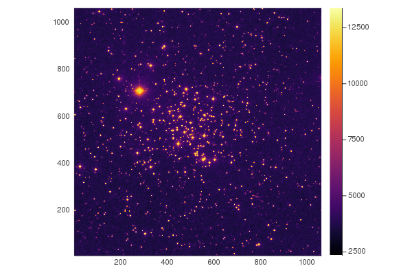
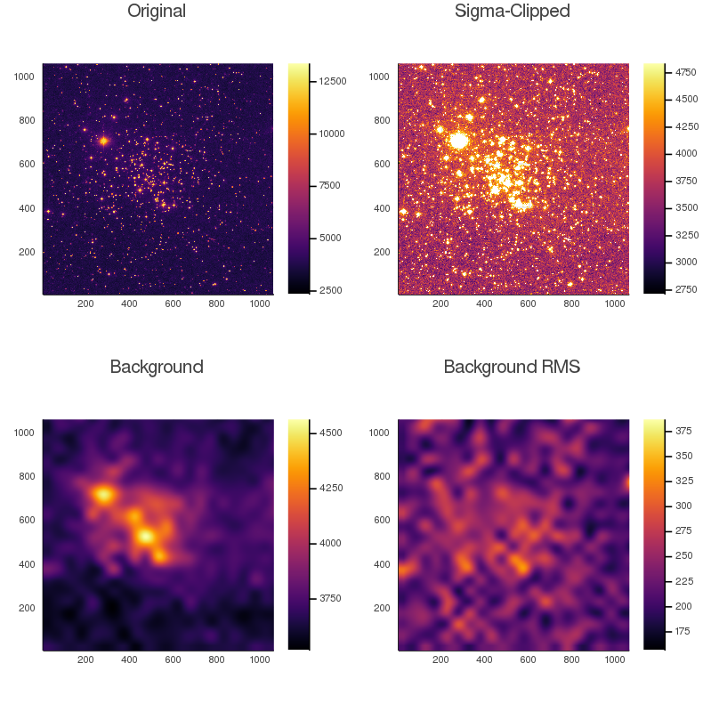
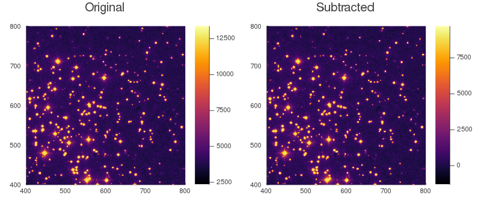

Background Estimation
The module provides tools and algorithms for estimating the background of astronomical data.
Usage
Estimating backgrounds is an important step in performing photometry. Ideally, we could perfectly describe the background with a scalar value or with some distribution. Unfortunately, it's impossible for us to precisely separate the background and foreground signals. Here, we use mixture of robust statistical estimators and meshing to let us get the spatially varying background from an astronomical photo.
Let's show an example
using Photometry
using FITSIO
using Plots
# Download our image, courtesy of astropy
hdu = FITS(download("https://github.com/astropy/photutils-datasets/raw/master/data/M6707HH.fits"))
image = read(hdu[1])'
default(aspect_ratio=1, xlims=(1, size(image, 2)), ylims=(1, size(image, 1)))
heatmap(image)
Now let's try and estimate the background using estimate_background. First, we'll si gma-clip to try and remove the signals from the stars. Then, the background is broken down into meshes, in this case of size (50, 50). Within each mesh, the given statistical estimators get the background value and RMS. By default, we use SourceExtractorBackground and StdRMS. This creates a low-resolution image, which we then need to resize. We can accomplish this using an interpolator, by default a cubic-spline interpolator via ZoomInterpolator. The end result is a smooth estimate of the spatially varying background and background RMS.
# sigma-clip
clipped = sigma_clip(image, 1, fill=NaN)
# get background and background rms with mesh-size (50, 50)
bkg, bkg_rms = estimate_background(clipped, 50)
# plot
plot(layout=(2, 2), size=(800, 800), link=:all)
heatmap!(image, title="Original", subplot=1)
heatmap!(clipped, title="Sigma-Clipped", subplot=2)
heatmap!(bkg, title="Background", subplot=3)
heatmap!(bkg_rms, title="Background RMS", subplot=4)
and now we can see our image with the background subtracted and ready for Aperture Photometry!
subt = image .- bkg[:1059, :1059]
plot(layout=(1, 2), link=:all, size=(800, 350), xlims=(400, 800), ylims=(400, 800))
heatmap!(image, title="Original", subplot=1)
heatmap!(subt, title="Subtracted", subplot=2)
API/Reference
Photometry.Background.estimate_background — Functionestimate_background(data,
::BackgroundEstimator=SourceExtractorBackground,
::BackgroundRMSEstimator=StdRMS;
dims=:)Perform scalar background estimation using the given estimators.
The value returned will be two values corresponding to the estimated background and the estimated background RMS. The dimensionality will depend on the dims keyword.
If the background estimator has no parameters (like MeanBackground), you can just specify the type without construction.
Examples
julia> data = ones(3, 5);
julia> bkg, bkg_rms = estimate_background(data)
(1.0, 0.0)
julia> bkg, bkg_rms = estimate_background(data, BiweightLocationBackground, BiweightScaleRMS)
(1.0, 0.0)See Also
estimate_background(data,
mesh_size,
::BackgroundEstimator=SourceExtractorBackground(),
::BackgroundRMSEstimator=StdRMS(),
::BackgroundInterpolator=ZoomInterpolator(mesh_size);
edge_method=:pad)Perform 2D background estimation using the given estimators using meshes.
This function will estimate backgrounds in meshes of size mesh_size. When size(data) is not an integer multiple of the mesh size, there are two edge methods: :pad and :crop. The default is to pad (and is recommend to avoid losing image data).
If either size is an integer, the implicit shape will be square (eg. box_size=4 is equivalent to box_size=(4,4)). Contrast this to a single dimension size, like box_size=(4,).
Once the meshes are created they will be passed to the BackgroundInterpolator to recreate a low-order estimate of the background at the same resolution as the input.
See Also
Photometry.Background.sigma_clip — Functionsigma_clip(x, sigma; fill=:clamp, center=median(x), std=std(x, corrected=false))
sigma_clip(x, sigma_low, sigma_high; fill=:clamp, center=median(x), std=std(x, corrected=false))This function returns sigma-clipped values of the input x.
Specify the upper and lower bounds with sigma_low and sigma_high, otherwise assume they are equal. center and std are optional keyword arguments which are functions for finding central element and standard deviation.
If fill === :clamp, this will clamp values in x lower than center - sigma_low * std and values higher than center + sigma_high * std. Otherwise, they will be replaced with fill.
Examples
julia> x = randn(100_000);
julia> extrema(x)
(-4.387579729097121, 4.518192547139076)
julia> x_clip = sigma_clip(x, 1);
julia> extrema(x_clip) # should be close to (-1, 1)
(-1.0021043865183705, 1.0011542162690115)Photometry.Background.sigma_clip! — Functionsigma_clip!(x, sigma; fill=:clamp, center=median(x), std=std(x))
sigma_clip!(x, sigma_low, sigma_high; fill=:clamp, center=median(x), std=std(x))In-place version of sigma_clip
sigma_clip! mutates the element in place and mutation cannot lead to change in type. Please be considerate of your input type, because if you are using Int64 and we try to clip it to 0.5 an InexactError will be thrown.
To avoid this, we recommend converting to float before clipping, or using sigma_clip which does this internally.